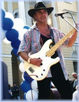
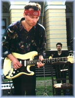

 |
 |
Группа "The Way" существует 4 года. Основная сфера их исполнительской деятельности - блюз техасского направления и Rhythm & Blues. В репертуаре коллектива популярные блюзовые композиции Джимми Хендрикса, Стиви Рей Уона, Элмора Джеймса, Джона Ли Хуккера, Альберта Кинга, Уилли Диксона и др.